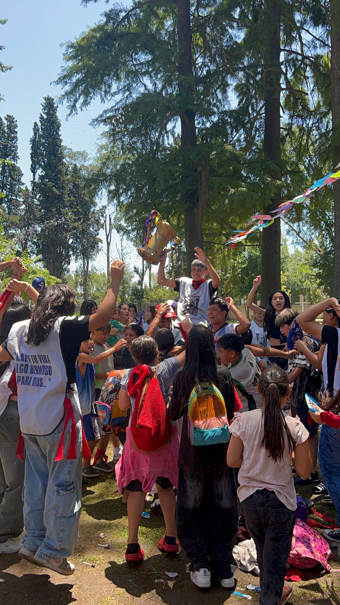
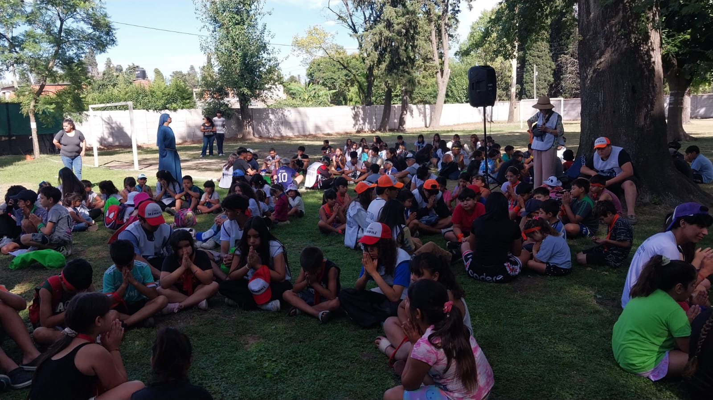
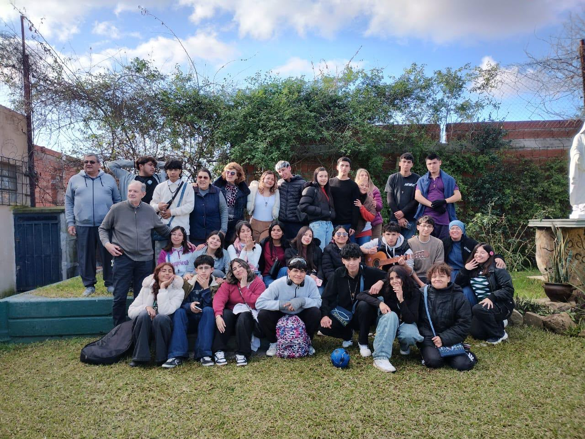

Grupos juveniles
Encuentros para compartir la fe, construir amistades y crecer en comunidad.
Ver más →En el Centro Madre Teresa compartimos encuentros para crecer en la fe, construir amistades y aprender a vivir en comunidad. Queremos que cada persona encuentre un espacio para participar, expresarse y compartir con los demás.
Los sábados son una oportunidad para encontrarnos, compartir actividades y fortalecer los vínculos que nos unen como comunidad.
Los encuentros pueden incluir oración, reflexión, juegos, música, talleres y propuestas recreativas. Cada actividad busca que podamos aprender, disfrutar y crecer junto a otras personas.
Encuentros para compartir la fe, construir amistades y crecer en comunidad.
Ver más →
La música como forma de encuentro, expresión y servicio a los demás.
Ver más →
Un espacio de convivencia, estudio y acompañamiento en la vida cotidiana.
Ver más →
Un espacio de encuentro, juegos, servicio y acompañamiento.
Ver más →
El Oratorio es un espacio de encuentro para niños, donde los juegos, los deportes, los talleres y la convivencia permiten compartir y aprender junto a los demás.

Las misiones nos invitan a salir al encuentro de otras personas, compartir nuestra fe y poner nuestros dones al servicio de la comunidad.
Consultar por estas actividadesCada actividad es una oportunidad para encontrarnos, aportar nuestros dones y descubrir el valor de compartir. Te invitamos a conocer el Centro Madre Teresa y a descubrir todo lo que podemos construir juntos.
Contactar al Centro